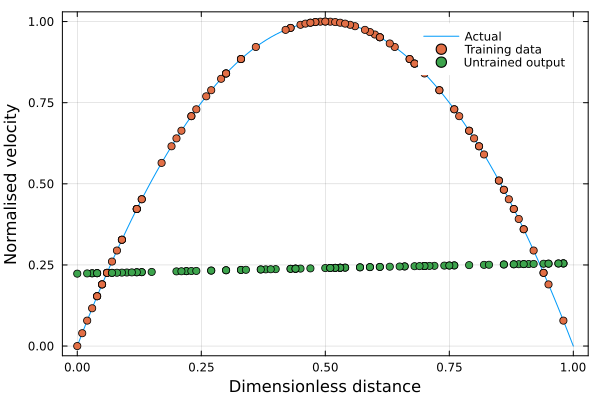
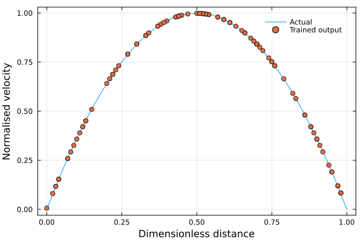

Advanced: 2D inflow using Flux.jl
Introduction
In this example a simple neural network is constructed and used to define an inlet boundary condition for the x-component of the velocity vector. This example serves to illustrate how other packages from the Julia ecosystem can be integrated into XCALibre.jl to extend its functionality. In particular, this example will show how to build a basic neural network using Flux.jl to represent a parabolic velocity profile and how this neural network can be used to define an inlet condition in XCALibre.jl.
The boundary condition is injected into the solution using the builtin DirichletFunction boundary condition, which is designed to pass arbitrary Julia functions to a given boundary.
XCALibre.Discretise.DirichletFunction — TypeDirichletFunction(ID, value) <: AbstractDirichletDirichlet boundary condition defined with user-provided function.
Input
IDBoundary name provided as symbol e.g. :inletvalueCustom function for Dirichlet boundary condition.
Function requirements
The function passed to this boundary condition must have the following signature:
f(coords, time, index) = SVector{3}(ux, uy, uz)Where, coords is a vector containing the coordinates of a face, time is the current time in transient simulations (and the iteration number in steady simulations), and index is the local face index (from 1 to N, where N is the number of faces in a given boundary). The function must return an SVector (from StaticArrays.jl) representing the velocity vector.
In this example, instead of passing a Julia function, the boundary velocity profile will be given via a simple neural network.
This interface is experimental and subject to change. Currently it can only be used for vectors.
Set up steps
Install and load modules
To be able to run this example the following modules need to be installed. This can be done by entering into package mode (using "]" in the REPL) and typing the following:
add Plots, XCALibre, Flux, StaticArrays, LinearAlgebra, KernelAbstractions, AdaptThis will download and install the required packages. Once installed, the packages can be loaded as follows:
using Plots
using XCALibre
using Flux
using StaticArrays
using Statistics
using LinearAlgebra
using KernelAbstractionsBuild a neural network model
Next, a neural network will be created to return a parabolic velocity profile. In this case, the training data will be generated using an analytical expression.
actual(y) = begin
H = 1 # channel height
H2 = H/2
h = y - H2
vx = (1 - (h/H2)^2)
return vx
endactual (generic function with 1 method)And define a simple 2-layer neural network to model the inlet function:
inflowNetwork = Chain(
Dense(1 => 6, sigmoid),
Dense(6 => 1)) |> f64Chain(
Dense(1 => 6, σ), # 12 parameters
Dense(6 => 1), # 7 parameters
) # Total: 4 arrays, 19 parameters, 408 bytes.Now, we generate the training and testing datasets using the analytical function. The neural network is not yet trained but it can already be used (of course, the prediction is not yet very useful). The various datasets, and initial model predictions are shown in the figure below.
y_actual = [0:0.01:1;] # array of y-values for plotting
vx_actual = actual.(y_actual)
# Generate training dataset
y_train = hcat(rand(0:(0.1/100):0.1, 100)...)./0.1
vx_train = actual.(y_train)
# Test locations selected randomly
y_test = hcat(rand(0:(0.1/100):0.1, 100)...)./0.1
vx_untrained = inflowNetwork(y_test)
plot(
y_actual, vx_actual, label="Actual",
frame_style=:box, foreground_color_legend = nothing,
xlabel="Dimensionless distance", ylabel="Normalised velocity")
scatter!(y_train', vx_train', label="Training data")
scatter!(y_test', vx_untrained', label="Untrained output")
The next step is to train the model as shown below. Finally, to make sure that the model has trained correctly, it is tested with at randomly generated points and the output compared with the analytical function as shown in the figure below.
loss(inflowNetwork, y, vx) = mean(abs2.(inflowNetwork(y) .- vx))
opt = Flux.setup(Adam(), inflowNetwork)
data = [(y_train, vx_train)]
for epoch in 1:20000
Flux.train!(loss, inflowNetwork, data, opt)
end
loss(inflowNetwork, data[1]...,)
vx_trained = inflowNetwork(y_test)
plot(
y_actual, vx_actual, label="Actual",
frame_style=:box, foreground_color_legend = nothing,
xlabel="Dimensionless distance", ylabel="Normalised velocity")
scatter!(y_test', vx_trained', label="Trained output")
Define inlet condition and interface
The next step is to define some interfaces to allow passing the model as if it was a simple Julia function. This requires only 3 key ingredients. First, a struct is defined that will contain any user data needed as well as the model itself. In this case, the following structure has been used (but users are completely free to define their own structures). The only requirements are that the structure should be a subtype of XCALibreUserFunctor and it must contain the steady property.
struct Inflow{F,I,O,N,V,T} <: XCALibreUserFunctor
U::F # maximum velocity
H::F # inlet height
input::I # vector to hold input coordinates
output::O # vector to hold model inferred values
network::N # model itself
xdir::V # struct used to define x-direction unit vector
steady::T # required field! (Bool)
endSecond, the struct above is used as a functor, defined following the requirements set by the DirichletFunction boundary condition. Essentially, this allows for external data to be stored in the Inflow object, which is then made "callable" to behave as a simple Julia function that returns the velocity vector at a given coordinate (vec) and time (t).
(bc::Inflow)(vec, t, i) = begin
velocity = @view bc.output[:,i]
return @inbounds SVector{3}(velocity[1], velocity[2], velocity[3])
endThe third step is to define a new method for the update_user_boundary! function from the Discretise module. This function offers a mechanism to update the internals of the previously defined structure by calling the user-provided neural network model. In this particular example, this is not required since the boundary values are not changing in time (it would have been sufficient to do a single inference round and to simply store the values inside the Inflow struct). However, this function is implemented here to illustrate the interface, and provide an example of a user-defined kernel. Notice that, in this particular example, the only purpose of this function is to scale the velocity field inferred by the neural network (since it was defined with values between 0 and 1).
XCALibre.Discretise.update_user_boundary!(
BC::DirichletFunction{I,V}, faces, cells, facesID_range, time, config
) where{I,V<:Inflow} =
begin
(; hardware) = config
(; backend, workgroup) = hardware
kernel_range = length(facesID_range)
kernel! = _update_user_boundary!(backend, workgroup, kernel_range)
kernel!(BC, faces, cells, facesID_range, time, ndrange=kernel_range)
KernelAbstractions.synchronize(backend)
(; output, input, U, network, xdir) = BC.value
output .= U.*network(input).*xdir # convert to vector
end
@kernel function _update_user_boundary!(BC, faces, cells, facesID_range, time)
i = @index(Global)
startID = facesID_range[1]
fID = i + startID - 1
coords = faces[fID].centre
BC.value.input[i] = coords[2]/BC.value.H # scale coordinates
end_update_user_boundary! (generic function with 4 methods)Create an instance of Inflow
An instance of the Inflow object is now created. Notice that the input and output fields contain vectors to hold the boundary face information, thus, they must be of the same size as the number of boundary faces. The mesh is, therefore, loaded first.
grids_dir = pkgdir(XCALibre, "examples/0_GRIDS")
grid = "backwardFacingStep_5mm.unv"
mesh_file = joinpath(grids_dir, grid)
mesh = UNV2D_mesh(mesh_file, scale=0.001)
nfaces = mesh.boundaries[1].IDs_range |> length20The Inflow functor is now constructed.
U = 0.5 # maximum velocity
H = 0.1 # inlet height
input = zeros(1,nfaces)
input .= (H/2)/H
output = U.*inflowNetwork(input).*[1 0 0]'
@view output[:,2]
inlet_profile= Inflow(
0.5,
0.1,
input,
output,
inflowNetwork,
[1,0,0],
true
)Main.Inflow{Float64, Matrix{Float64}, Matrix{Float64}, Flux.Chain{Tuple{Flux.Dense{typeof(NNlib.σ), Matrix{Float64}, Vector{Float64}}, Flux.Dense{typeof(identity), Matrix{Float64}, Vector{Float64}}}}, Vector{Int64}, Bool}(0.5, 0.1, [0.5 0.5 … 0.5 0.5], [0.49915514303196595 0.49915514303196595 … 0.49915514303196595 0.49915514303196595; 0.0 0.0 … 0.0 0.0; 0.0 0.0 … 0.0 0.0], Chain(Dense(1 => 6, σ), Dense(6 => 1)), [1, 0, 0], true)Run simulation
The final step is simply to set up and run a simulation in XCALibre.jl. Notice that this does not require any special considerations, only to remember to use the DirichletFunction boundary condition when setting the inlet velocity. The inlet_profile functor object is then passed to the boundary.
velocity = [0.5, 0.0, 0.0]
nu = 1e-3
Re = velocity[1]*0.1/nu
model = Physics(
time = Steady(),
fluid = Fluid{Incompressible}(nu = nu),
turbulence = RANS{Laminar}(),
energy = Energy{Isothermal}(),
domain = mesh
)
@assign! model momentum U (
DirichletFunction(:inlet, inlet_profile), # Pass functor
Neumann(:outlet, 0.0),
Dirichlet(:wall, [0.0, 0.0, 0.0]),
Dirichlet(:top, [0.0, 0.0, 0.0]),
)
@assign! model momentum p (
Neumann(:inlet, 0.0),
Dirichlet(:outlet, 0.0),
Neumann(:wall, 0.0),
Neumann(:top, 0.0)
)
schemes = (
U = set_schemes(divergence = Linear),
p = set_schemes()
)
solvers = (
U = set_solver(
model.momentum.U;
solver = BicgstabSolver,
preconditioner = Jacobi(),
convergence = 1e-7,
relax = 0.7,
rtol = 1e-4,
atol = 1e-10
),
p = set_solver(
model.momentum.p;
solver = CgSolver,
preconditioner = Jacobi(),
convergence = 1e-7,
relax = 0.3,
rtol = 1e-4,
atol = 1e-10
)
)
runtime = set_runtime(iterations=500, time_step=1, write_interval=500)
hardware = set_hardware(backend=CPU(), workgroup=1024)
config = Configuration(
solvers=solvers, schemes=schemes, runtime=runtime, hardware=hardware)
GC.gc()
initialise!(model.momentum.U, velocity)
initialise!(model.momentum.p, 0.0)
residuals = run!(model, config)Setting boundary 1: inlet
Setting boundary 2: outlet
Setting boundary 3: wall
Setting boundary 4: top
Setting boundary 1: inlet
Setting boundary 2: outlet
Setting boundary 3: wall
Setting boundary 4: top
[ Info: Extracting configuration and input fields...
[ Info: Pre-allocating fields...
[ Info: Defining models...
[ Info: Initialising preconditioners...
[ Info: Pre-allocating solvers...
[ Info: Initialising turbulence model...
[ Info: Initialise writer (Store mesh in host memory)
[ Info: Allocating working memory...
[ Info: Starting SIMPLE loops...Simulation result